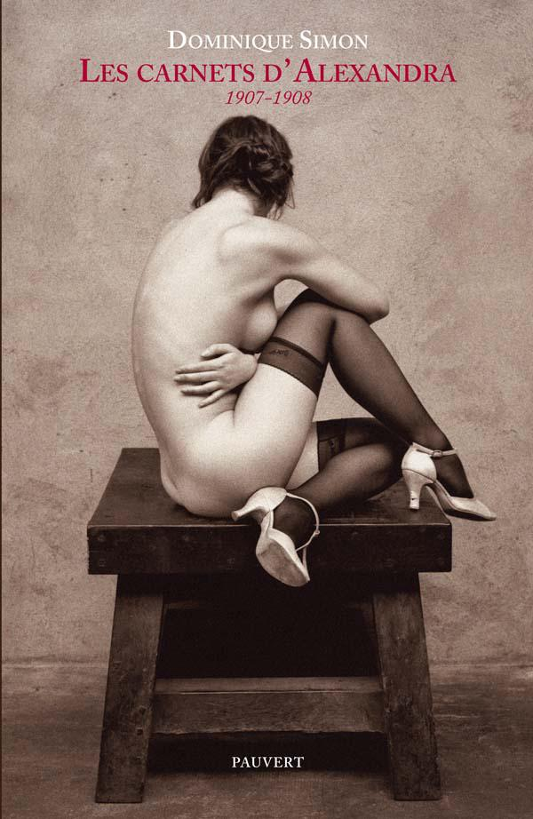

Le lendemain, j’écrivis à mon mari pour l’informer qu’un jeune homme se présenterait bientôt chez lui et que « notre amie » et moi lui demandions de favoriser au mieux ses ambitions, ajoutant qu’il serait souhaitable de le tenir au plus près de lui pour qu’il ne soit pas livré à lui-même dans Paris.
J’écrivis aussi à ma cousine pour profiter une fois encore de son expérience. Je me posais bien des questions sur mes sensations « lors de la fête ». À mots couverts, je lui racontai ce moment où rien ne semblait possible et qui m’avait néanmoins menée à mon comble. Ce message me réclama beaucoup d’efforts, car je ne pouvais pas écrire les choses directement, n’ayant pas comme elle la facilité donnée par l’encre sympathique.
La Russe s’était servi de sa langue comme un homme l’aurait fait avec autre chose. Et alors que je n’avais jamais ressenti de semblable émotion avec mon mari, j’avais, en cette occasion inoubliable, été rendue au naturel du féminin.
***
Ce matin en me réveillant, subitement, je compris pourquoi j’éprouvais comme une obligation de poser ma bouche sur l’intime des femmes. Par une erreur de raisonnement, j’avais repoussé trop vite l’idée que j’y recherchais le sein d’une mère. Ce qu’elles m’offraient de chaud et de mouillé était nourrissant comme du lait, alors que le bout de leurs seins, quand je le suçais, ne me rendait rien. Aussi me semblait-il que l’inconnue de mon histoire était un incident oublié, mais qui m’avait poussée hors du chemin conduisant naturellement une enfant à devenir une femme. Et, en repensant à ma façon d’aimer, j’étais maintenant certaine que sucer le plus chaud de leur fente m’amenait à l’état d’émotion avide que, bébé, je prenais à la tétée.
***
Pour me changer un peu les idées, et surtout pour acheter des choses qu’on ne trouve pas ici, je décidai de prendre le train et de pousser jusqu’à *** malgré le grand froid.
L’invitation de madame de *** m’avait fait prendre conscience que tout ce que je portais n’était plus à la mode depuis longtemps.
Je pris le premier train pour avoir toute la journée devant moi.
Après avoir acheté ce que je pensais indispensable, j’entrai dans la boutique d’une modiste dont la vitrine s’ornait d’un chapeau très original.
La petite vendeuse s’approcha de moi. Je pensai qu’elle allait me faire l’article, mais il n’en était rien. C’était une fille sage qui n’avait pas les façons de son emploi, et qui ne tenta rien pour me forcer la main. Elle parlait peu. Quand j’essayai le chapeau, elle vérifia avant tout qu’il m’allait bien. On eût dit une de ces institutrices qui font leur travail avec cette honnêteté et cette patience qui forcent l’admiration.
Tout à coup, dans la glace, je découvris la patronne, assise derrière son comptoir, qui m’observait du coin de l’œil, me détaillant de la tête aux pieds, et plus particulièrement le bas de mon dos. Elle avait la peau fine, un teint magnifique et de beaux yeux tristes, d’un marron presque jaune d’une clarté extraordinaire. Quand je me tournai vers elle, elle me sourit simplement. À sa façon de me reluquer, je me demandai ce qu’elle voulait de moi et si elle n’avait pas du goût pour son genre. À tout hasard, je lui adressai une œillade qu’elle me rendit d’un air entendu. Une femme entra dans le magasin, détournant l’attention de la vendeuse. Pour engager la conversation avec la patronne, je lui dis mon étonnement de trouver par ici de si belles et si originales créations. C’était normal, me répondit-elle, puisque tout venait de Paris, comme elle d’ailleurs. Entre-temps, la cliente était sortie sans rien acheter. Comme je lui demandai s’il n’était pas difficile de vivre ici quand on avait été parisienne, elle répondit d’un air énigmatique que « c’était mieux pour elle ». Au même instant, la petite s’emmitoufla dans une grande écharpe, prit un carton à chapeau, sans doute pour une livraison. Je restai seule avec la patronne.
Comme chaque fois que j’étais en compagnie d’une femme, je commençai d’imaginer qu’elle pourrait m’offrir un plaisir inattendu, sachant néanmoins que je me trompais souvent sur leurs intentions.
« Pourquoi est-ce mieux pour vous ici qu’à Paris ? » ajoutai-je.
C’était pour une bien triste raison ! Mais puisque nous étions, à n’en pas douter, toutes les deux des « gagneuses », et que nous avions visiblement bien des choses en commun, elle voulait bien, en confidence, me raconter son histoire.
Aussitôt, je compris qu’elle avait dû exercer une autre sorte de commerce avant de vendre des chapeaux, et qu’elle me prenait pour une professionnelle. Alors que je cherchais déjà maladivement à la séduire, comme toutes les femmes que j’approchais, sans jamais me lasser, elle n’avait perçu que mon attrait pour le plaisir, sans l’identifier davantage.
Je ne dis rien pour la détromper, curieuse de connaître son histoire, avec l’espoir aussi de conquérir une femme dont la séduction avait été le métier.
Elle était issue d’un assez bon milieu et était entrée dans « le métier » par accident, sans y être poussée par la nécessité, simplement parce qu’elle fut livrée trop jeune à elle-même, son père, seul parent qui lui restait, géographe de profession, étant toujours par monts et par vaux. Bien qu’il se montrât aimant, il avait dû se résoudre à la confier à la vieille bonne qui leur tenait lieu de famille. Mais la petite se sentait seule, sa mère l’ayant quittée trop tôt, emportée par la maladie.
Adolescente, jolie et de nature enjouée, jouissant d’une totale liberté, elle se mit à fréquenter, au hasard des invitations, des fils et filles de grands bourgeois et des artistes.
Au bout de quelques mois de cette vie, à l’instigation d’un de ces camarades, avec qui elle s’était liée d’amitié d’autant plus facilement qu’il préférait les garçons et lui épargnait une cour pesante, elle accepta par défi d’offrir son pucelage au gagnant d’une partie de cartes. Pour participer à ce tournoi, son ami avait choisi de beaux jeunes gens et, par provocation, une fille. Tous lui plaisaient. Son mentor lui avoua après coup qu’il avait pensé ainsi la soulager du fardeau de la virginité, qui empêchait les filles de connaître le vrai plaisir avant leur mariage. De son côté, à l’aide de sa bouche ou de ses mains, elle avait déjà donné du plaisir à certains garçons de sa joyeuse bande et s’était découvert une passion pour la chair qui lui occupait, à l’époque, tout le corps et l’esprit. Ce beau monde organisait des petits jeux du corps d’autant plus librement que les étudiants en médecine de la bande avaient enseigné les précautions à prendre pour éviter les fâcheuses conséquences. Ainsi, sachant jusqu’où l’on pouvait aller, chacun gardait la mesure dans ce qu’il faisait. Et puis les garçons ne voulaient en aucun cas compromettre un brillant avenir, si bien qu’entre nous, disait-elle, nous ne nous livrions jamais à la sorte de débauche qu’on pourrait, dans ces circonstances, s’imaginer. De plus, ses amis étaient instruits et avaient, quoi qu’on en pense, un grand sens moral, et à aucun moment ils n’auraient voulu qu’une des filles qu’ils pratiquaient soit déshonorée. C’était un milieu très sain, voué entièrement au plaisir et à la gaieté. Aussi lui tardait-il de connaître le vainqueur du tournoi.
Elle compta les points, et, en imagination, elle passait ainsi de main en main, en fonction de l’avantage que, tour à tour, chacun prenait sur les autres. Elle trouvait un plaisir supplémentaire à l’idée qu’elle s’apprêtait à jouir pour la première fois, sans savoir avec qui.
Comme au spectacle, puisque chacun connaissait l’enjeu, elle éprouvait, me dit-elle, un plaisir anticipé à l’idée que tous allaient, en tout cas en pensées, partager l’intime du moment.
Ce ne fut pas le plus beau qui gagna, ni celui qu’elle aurait choisi d’elle-même si les choses avaient été selon son cœur. Pourtant, il n’était pas question de se dérober, bien que personne ne l’eût forcée à rien si au dernier moment elle avait changé d’avis.
Le jeune homme se dirigeait déjà vers la petite chambre à côté du salon. Tous l’encouragèrent et l’accompagnèrent jusqu’à la porte avec un air de cérémonie qui rendait soudain l’instant solennel. De son côté, elle était trempée d’avoir trop attendu et ses dessous, d’une façon presque gênante, avaient déjà reçu le plus de ce qu’elle pouvait donner.
Elle poursuivit :
« On ferma la porte derrière nous, mais je me doutais qu’au travers chacun épiait le moindre bruit ou le moindre signe qui eût pu indiquer comment le jeune homme avait choisi de s’y prendre.
La chance, me disait-elle, avait bien fait les choses. Le garçon était très doux et faisait tout en prenant son temps. Après l’avoir progressivement déshabillée, par une sorte de jeu, pour augmenter son désir, il lui laissa son dessous encore plus mouillé qu’elle ne l’avait cru. Content de la voir dans de si bonnes dispositions, il commença d’embrasser par petites touches tout ce qu’il pouvait de peau, mais sans s’approcher de l’essentiel. Elle avait mal tellement son ventre appelait la satisfaction.
Voyant qu’il prenait un plaisir malin à tourner autour du pot, elle retira elle-même le peu qui la couvrait encore, puis s’écarta bien pour lui donner envie. Continuant son travail d’agacement, le jeune homme retardait encore cet irréparable qu’elle attendait de lui.
Soudain, sa principale amie entra dans la pièce. Sans rien lui en dire, son ami avait organisé ce coup de théâtre, pensant que cela pimenterait un peu la situation. Alors que son amie était encore dans l’entrebâillement de la porte, elle aperçut plusieurs de ses camarades qui passaient la tête, lançant des oh ! des ah ! des oh là ! là !, et toutes sortes de commentaires aussi drôles qu’impertinents. Son amie avait refermé la porte et, silencieusement, s’était assise à côté d’elle elle lui caressait les cheveux. Elle, déjà dans un état d’envie et de tension qu’on ne peut s’imaginer, se sentait défaillir. Puis le jeune homme amena son intime au plus près du sien, s’apprêtant à lui ravir ce qui depuis trop longtemps l’empêchait d’avoir le meilleur du plaisir.
De son côté, son amie s’était retroussée et, maintenant debout, s’approchait au plus près de son visage pour lui montrer, en s’écartant bien la fente, comment elle se donnait habituellement du plaisir. Face à ce spectacle troublant, le jeune homme perdait un peu du contrôle parfait qu’il avait gardé sur la situation jusqu’à présent. Sans cesser de montrer tout des mouvements de ses doigts, son amie fit entrer ceux de son autre main à l’intérieur de son ventre dans un va-et-vient rythmé du meilleur effet. Enfin, elle se pencha sur sa bouche pour lui donner un baiser, pendant que le jeune homme lui enlevait ce qu’enfin elle allait perdre.
Le baiser de son amie fut si tendre et si voluptueux que de sa vie jamais elle n’en reçut un qui fût si bien donné. C’était si bon qu’elle en oubliait ce que par ailleurs le garçon lui faisait. À un moment, elles se mirent, au plus fort de l’action, à s’embrasser furieusement comme deux folles d’amour. Les trois corps s’unissaient dans une fusion qui ne pourrait se reproduire. Elle en gardait un souvenir si marquant que toute sa vie elle avait comparé les prestations de chacun à cette expérience unique dont elle ne retrouva jamais l’intensité. La fille avait, sans qu’elle le vît toutefois, dû prendre en même temps qu’elle sa jouissance, et les trois énergies s’étaient réunies un instant en une seule. Puis, finalement, son amie préleva un peu du sang qui avait coulé entre ses jambes sur son doigt, et, comme l’on fait pour du parfum, s’en mit en riant derrière l’oreille, disant que le sang de vierge portait bonheur.
Tous ses amis entrèrent alors dans la chambre, et, bien qu’elle fût nue, leur naturel empêchait que sa pudeur en fût offensée.
Elle entendit les garçons féliciter celui qui avait officié pour la belle douceur qu’il avait déployée avant de lui percer le ventre. À ces joyeux « Bravo l’acteur », il répondit modestement : « N’oublions pas l’auteur. » Bientôt tous se mirent à taper dans les mains, comme l’on fait au théâtre, en criant :
« L’auteur, l’auteur, l’auteur… »
L’intéressé répondit par une révérence gracieuse, qui laissait apparaître tout de sa féminité.
Elle apprit plus tard de ce dernier que la partie avait été truquée et qu’il avait choisi le plus expérimenté de ces messieurs afin que tout fût au mieux pour elle. Enfin, deux futurs médecins l’auscultèrent, vérifiant si la vesse utilisée pour l’occasion était encore en état. Comme selon eux tout s’était parfaitement passé, on la laissa se reposer.
Elle se souvenait de cette époque comme de la plus sensuelle et de la plus heureuse de sa vie.
Un jour, son ami qui n’aimait pas les femmes, voulant aller plus loin dans le défi, lui demanda si elle était capable, exceptionnellement, de se faire payer pour ce qu’elle faisait d’ordinaire par plaisir. Non seulement elle le pourrait, mais cette idée lui plaisait beaucoup. Elle serait en quelque sorte comme « une gourmande qu’on payerait pour manger ». Alors qu’ils étaient au théâtre, son ami proposa les services de la jeune fille à un bel Italien de passage à Paris, diplomate de profession. C’était un homme très prévenant avec les femmes, si bien qu’elle resta pendant trois jours en sa compagnie et en fut bien heureuse. En partant, il lui laissa, comme c’était convenu, une très forte somme dont elle n’avait d’ailleurs pas l’utilité. Chaque fois qu’il venait à Paris, l’Italien lui apportait désormais des cadeaux aussi raffinés que coûteux. Et il n’omettait jamais de lui laisser en partant le prix qu’il lui devait, sans pourtant qu’elle réclamât rien.
Son mentor, ou son âme damnée, comme on voudra, bien qu’il n’ait jamais voulu toucher d’argent pour les présentations qu’il faisait, lui demanda néanmoins un jour de lui acheter une paire de chaussures. Il les choisit voyantes, de très mauvais goût, et les exhibait partout dans le beau monde, sans que personne en comprenne la raison, car il était très riche et toujours habillé avec une parfaite élégance. Il ne consentit à s’expliquer que vis-à-vis d’elle, lui disant qu’il prenait une sorte de plaisir à savoir qu’elles avaient été payées avec de l’argent « d’amour ». Il ajoutait qu’ainsi accoutré il se sentait dans la peau d’un « protecteur », et, pour la faire rire, il l’appelait « sa petite gagneuse » d’une voix éraillée de crapule.
Elle vivait comme elle l’avait rêvé, dans le bonheur perpétuellement renouvelé des sens. Jusqu’au jour où son père se mit en tête de déménager près du Bois pour bénéficier d’une maison avec un jardin.
Le voisin d’en face, un banquier, la remarqua aussitôt. Elle me dit qu’à l’époque elle était très belle et inspirait facilement le désir.
Elle le jugeait assez laid et trop vieux pour elle, mais, par une sorte de nouveau défi, elle voulut savoir si elle était capable de faire la chose par décision et non pour le plaisir. Elle fit en sorte de le croiser alors qu’il rentrait et de se faire inviter. Le soir même, elle était dans son lit. Il devint rapidement fou d’elle, mais, par naturel, elle lui avoua qu’elle ne lui avait cédé que par caprice, et qu’en plus de n’être pas la femme d’un seul elle aimait être payée pour la sorte de travail qu’elle accomplissait. Enfin, sans cruauté aucune, elle ajouta « qu’il n’avait pas ce qu’il fallait » et qu’avec lui elle ne trouvait pas son compte… L’homme, qui était sage et connaissait la vie, lui répondit : « N’importe… » Il sortit de son portefeuille une liasse de billets et conclut : « Viens quand tu voudras, je vais donner des instructions aux domestiques pour qu’on te laisse toujours entrer. » Malgré la proximité, elle ne vint pas souvent, car à l’époque elle fréquentait un Allemand qui la comblait sur le plan que l’on sait et pour qui, quoiqu’il la payât, elle avait secrètement du sentiment. Tout était au mieux pour elle, sinon qu’elle avait beaucoup d’argent dont elle ne savait que faire et qu’elle devait cacher, d’autant que, contrairement à bien des femmes de la profession, elle n’avait aucun goût pour le luxe. En outre, sensuellement, ses relations avec ses amants la comblaient et lui donnaient une sorte d’énergie, car ils ne venaient la voir que pour le plaisir qu’ils en voulaient et étaient donc toujours dans les meilleures dispositions… Le soir ou le matin, c’était selon, elle s’endormait comme un bébé, et, quand elle se réveillait, elle était gaie comme un pinson. Pourtant, un jour, il lui sembla que son ventre grossissait, bien qu’elle eût régulièrement son sang du mois, et, redoutant une maladie, elle finit par consulter un des ses anciens amis qui avait fini sa médecine et lui apprit qu’elle était enceinte. Le doute n’était pas permis, un enfant avait trouvé une mère, qui de son côté ne cherchait rien du tout et ne savait même pas qui était le père. Elle s’en ouvrit à son médecin et ami, qui se douta bien quelle demande elle allait lui faire… Avant même qu’elle parle, il lui annonça qu’il n’était plus possible d’agir car sa grossesse était très avancée ; le petit serait bientôt né. Sachant qu’il serait de bon conseil et qu’il trouverait un moyen de la sortir de cette situation, elle choisit de lui raconter la vie qu’elle menait.
Il lui suggéra d’accepter l’enfant, arguant qu’on s’en faisait un monde mais que ce n’était pas le pire qui pouvait arriver dans la vie d’une femme, et que son père, un homme évolué, ne lui ferait pas trop d’embarras.
À l’époque, me dit-elle, elle ne pensait qu’à la chair et n’envisageait pas de s’y consacrer avec moins de liberté.
Le médecin lui proposa de donner l’enfant à des connaissances à lui qui se désespéraient de n’en pouvoir avoir, chez qui il serait choyé et ne manquerait de rien. Si tout le monde était d’accord, le moment venu, elle feindrait de s’absenter une semaine ou deux pour rendre visite à une amie.
Le médecin lui fit rencontrer les futurs « parents » qui s’engagèrent par un serment de cœur, et bien que la loi leur donnât tous les droits sur l’enfant, à le lui rendre si un jour sa mère le désirait.
Il s’ensuivit une période compliquée où chacun devait combiner avec son entourage pour que tout fût crédible.
Au début elle prit des nouvelles du nourrisson, mais, rapidement rassurée, pensant à juste titre que sa fille n’avait besoin de rien, elle l’oublia presque tout à fait.
Seize ans passèrent, quand un carton lui annonça le mariage de sa fille. C’était en « urgence », car un homme l’avait prématurément arrachée à l’enfance, la mettant dans la plus difficile des positions où une jeune fille pût se trouver. Malgré le nom de l’homme, et bien que ce fût pour lui une sorte de mésalliance, la famille du futur mari ne s’opposait pas à cette union, ce qui aurait dû mettre la puce à l’oreille de tout le monde. De son côté, la fille ne disait trop rien des circonstances exactes de leur rencontre ni des relations qu’elle entretenait avec celui qui était désormais son mari. Après quelques semaines, la situation devint claire pour tous. L’homme buvait. C’était un viveur dont les parents avaient depuis longtemps renoncé à changer les façons violentes, et attendaient du mariage qu’il l’assagisse un peu, contents de s’en débarrasser à si bon compte. Mais lui continuait à mener sa vie d’autrefois, et, envers sa femme, se croyait tout permis de tyrannie et de cruauté.
Un jour, alors qu’il rentrait ivre, en plus de la rouste qu’il lui donnait souvent, il lui mit un coup de pied au ventre avec tant de force qu’il lui sembla que l’enfant, encore en elle, en aurait crié. Avec la rage soudaine d’une mère qui veut sauver son petit, elle saisit un chandelier et frappa l’homme à mort. Sa fille, mot qu’elle prononçait maintenant en pleurant, lui aurait dit que l’enfant était née petite, frêle et presque étranglée par le cordon, sans doute à cause de ce coup terrible. Lors de son procès, la jeune mère joua de malchance, car l’accusation était menée par une étoile montante de la magistrature qui voulait se faire une réputation d’inflexibilité. Pour ne rien arranger, le père du défunt possédait, entre autres biens, un journal qui fit sa une de cette affaire et attisa les passions au point qu’on se rendait au procès comme au théâtre. Aucune des décisions que les juges auraient pu prendre n’était plus en mesure de contenter quiconque, les uns estimant telle peine trop élevée, et les autres, pas assez.
Voyant que rien n’était certain quant à l’issue des débats, le père fit passer un nouvel article sur un bon fils victime d’une séductrice qui n’en voulait qu’à son argent.
Lors de l’audience, l’avocat de la défense bredouilla quelques mots de plaidoirie que l’assistance écouta à peine. L’affaire tournait à la débâcle. La mère de l’accusée avait pris conscience trop tard de la situation.
Elle m’expliquait que, dans cette imbroglio, elle avait laissé faire, ayant toujours souffert d’une sorte de fatalisme.
Deux clientes entrèrent. Des jeunes femmes volubiles intéressées par un modèle de la vitrine. La patronne, dérangée dans son récit, ne bougea pas de derrière son comptoir. Malgré cet accueil peu chaleureux, les deux femmes étaient, comme souvent les importunes, livrées à elles-mêmes. Elles commentaient chaque article, touchaient à tout avec un naturel qui finalement, bien que ce fût contre l’usage, arrangeait tout le monde.
Presque machinalement, mes yeux se promenèrent d’abord sur leurs fesses, puis sur les seins de la plus petite, parfaitement galbés et dont le bout des tétons pointait à travers son corsage.
Toute à ma rêverie, je ne vis pas que la patronne m’observait autant que je détaillais les deux filles.
La petite vendeuse rentra de sa livraison et prit les choses en main. En cinq minutes, la vente fut conclue. Voulant reprendre son récit, sa patronne l’envoya faire une course.
Le jour commençait de décliner. Je ne pouvais plus rester trop longtemps sans rater mon train.
« Voilà, conclut-elle, vous savez presque tout. »
Sa fille avait été condamnée. Contre la loi des hommes, une femme ne pouvait jamais grand-chose et c’était comme si ce mari violent, depuis l’autre monde, torturait encore sa femme.
Puis, me regardant bien au fond des yeux, elle ajouta que dans les prisons pour femmes, comme ailleurs, sévissait une hiérarchie très dure. Les dernières arrivées servaient les autres de toutes sortes de façons, et, pour les soumettre, on les forçait à donner du plaisir aux plus anciennes avec leur bouche. Certaines ayant appris à aimer ce genre de plaisir entraînaient les autres par manigance, et parfois, entre filles, naissait comme un bel étrange, un réel amour.
Mon interlocutrice guettait mon trouble. En effet, pensant à ces filles forcées d’en aimer d’autres, instantanément, je sentis que le mouillé me venait.
J’étais démasquée. Alors, comme si c’était une chose entendue entre nous, je demandai :
« Quand avez-vous compris que j’avais du goût pour mon genre ?
– À votre façon de détailler les clientes. Vous regardiez leurs fesses comme le font les hommes… Et, croyez-moi, je m’y connais. »
Je lui répondis que la nature m’avait faite ainsi et qu’entre nous il n’y avait pas une si grande différence.
Puis, profitant des dernières minutes, je lui demandai le nom de sa fille, celui du procureur qui avait mené l’accusation, et pourquoi elle avait quitté le métier et Paris.
« Oh, j’ai quitté le métier, si l’on peut dire, comme j’y étais entrée… Par accident. »
Puis, au lieu de me donner des précisions, elle me demanda à quelle heure je devais partir.
Je regardai ma montre. « Avant dix minutes. »
« Alors vous comprendrez de vous-même, dans dix minutes, sans que j’aie besoin de vous l’expliquer… »
Je restai sur ma faim, intriguée, et pour finir je lui confiai que j’étais mariée à un politique et que je ferais tout mon possible pour que le sort de sa fille fût amélioré.
« Ne m’infligez pas la torture qu’est l’espoir, me répondit-elle. Je n’ai pu survivre jusqu’ici que par résignation, en n’attendant plus de quiconque le moindre avantage. » Puis, gentiment, elle conclut : « Allez, partez vite maintenant, sinon vous manquerez votre train. » Tandis qu’elle m’accompagnait à la porte j’entendis le bruit sourd que faisait, quand elle marchait, sa jambe de bois.
Je rentrai à la nuit. Comme prévu, le jardinier m’attendait à la gare. Encore tout émotionnée, malgré la fatigue, je pris le temps de noter les renseignements que j’avais obtenus d’elle, noms, adresses, si bien que je me couchai très tard. Je ne trouvai pas facilement le sommeil car, en pensée, je combinai mille façons de porter secours à la fille de la marchande.
***
Je me suis levée très tôt pour écrire à mon mari. Grâce à lui, j’en saurai plus quant au retentissement que le procès avait connu à l’époque. Je lui demandai, sans me gêner, s’il pouvait intervenir en faveur de cette jeune femme emprisonnée, car j’avais encore en mémoire les paroles de madame de *** : « Il n’y a pas de honte, jamais, à demander pour les autres. » Je lui racontai un peu des circonstances dans lesquelles j’avais eu vent de l’histoire, par hasard, en faisant des courses, à cause d’un chapeau… J’ajoutai que j’attendais sa réponse et en étais pressée.
***
En faisant les boutiques, j’avais acheté ce n’importe quoi dont les femmes ont pourtant besoin, et, entre autres choses, un parfum coûteux dont on m’avait vanté l’originalité et qui ce matin, à nez reposé, si l’on peut dire, me paraissait avoir une odeur si particulière que je n’étais plus très sûre de le porter un jour. Faute d’interlocutrice, je demandai son avis à la petite bonne. Elle réfléchit un moment, puis dit :
« Ça sent le propre ! »
D’un coup j’en fus anéantie et prise d’une envie irrépressible de me débarrasser de cette diablerie de parfumeur. Je lui dis d’un air d’autorité :
« Eh bien, puisqu’il vous plaît, je vous le donne. »
La petite, avec un bon naturel, me prit le flacon des mains, l’ouvrit et, d’un air soupçonneux, après l’avoir passé une nouvelle fois sous son petit nez retroussé, me répondit :
« Oh ! non ! Madame, j’en veux pas ! Moi, j’porterai pas de “sent bon” qui sent çà… »
***
Enfin la réponse de mon mari ! Une longue lettre qui n’aborde pas le seul sujet important. Il ne me parle que de lui, de ses bonnes relations avec les puissants, et combien le jeune homme qui lui a été envoyé, dans bien des occasions, s’est montré d’une grande utilité.
Je suis très en colère et j’enrage du manque de considération qu’il me manifeste.
***
Je pensais avec obsession à la petite prisonnière, ce qui m’étonnait, car je me savais d’un grand égoïsme.
Avant d’entendre son histoire, je maîtrisais mon existence avec un sentiment de force qui me permettait d’aborder le quotidien sans angoisse. Je ne craignais plus qu’alentour on découvre mes façons, et la perspective d’affronter les attaques m’amusait presque, car j’avais compris qu’au fond j’aimais à me montrer. Souvent, d’ailleurs, pour m’aider à trouver la satisfaction, je repensais au regard de la petite voisine, quand je m’étais écarté la fente, et à ce trouble qui l’avait, me semblait-il, envahie.
Mais depuis que j’avais en tête la folle idée de faire libérer la fille de la marchande, une impression enfantine d’impuissance m’étreignait.
J’écrivis de nouveau à mon mari, avec diplomatie cette fois, en cherchant les mots et les tournures flatteuses. Assez sournoisement, je fis au passage une sorte de mea culpa, lui disant que je m’étais comportée assez « sottement » avec lui par manque de compréhension et surtout de maturité. Au reste, je ne mentais pas tout à fait. Je lui avouai que je n’avais pas mesuré, étant femme, ses qualités naturelles aujourd’hui reconnues au plus haut niveau. Ma requête ne venait qu’ensuite. Je lui demandai la faveur de m’aider un peu pour ce dont je lui avais déjà parlé dans mon premier courrier, ajoutant quelques gentillesses assez bien tournées, sachant d’avance que ses dispositions de Narcisse lui feraient tout croire des compliments que je lui adressais.
***
Ce n’est pas de lui, mais de ma cousine, que me parvint la lettre suivante. Pour sa part, m’écrivait-elle en réponse à mon expérience avec la Russe, elle n’avait jamais ressenti ce que je décrivais avec une femme. En tout cas cette sorte d’extase était une chose très rare et probablement un privilège. Elle-même ne l’avait connue qu’une seule fois, le plus étrange étant que, bien qu’elle fréquentât longtemps l’homme qui la lui fit éprouver, le « phénomène » ne s’était jamais reproduit avec autant d’intensité, bien qu’à chaque fois elle l’espérât.
***
Dans ma réponse, je lui racontai ma rencontre avec la modiste et cette sorte d’idée fixe que j’avais de l’aider, qui me laissait si peu de répit que j’en oubliais presque parfois même le jour que l’on était. Aussi lui demandai-je si elle avait déjà ressenti cet état où plus rien ne compte hors ce que l’on a décidé. Enfin, je lui annonçai que j’avais en tête de faire bientôt le voyage, pour embrasser « ma chère cousine ».
***
Les jours passent, et ma détermination commence à faiblir. Un vilain doute s’insinue en moi quant à l’utilité d’entreprendre ce difficile sauvetage, et peu à peu ma tendance naturelle à la contemplation gagne sur mon désir d’action.
Pourtant, contre la raison, j’ai l’impression d’entendre une voix qui n’est pas mienne et qui m’indique comment procéder pour aboutir dans mon projet. Au cours de ma vie, je l’ai plusieurs fois entendue, et, bizarrement, pas toujours en cas de grand doute ou de réelle difficulté, mais plutôt comme si en plus de vivre mon petit quotidien j’avais à faire aussi, pour « l’Inconnu », un plus qu’on me demanderait. Or ce « on » très indéfini me suggère d’aller voir madame de *** et de lui demander son conseil.
***
Ce jour-là, elle recevait pour un goûter.
Je m’excusai de ne pas l’avoir prévenue de ma visite, mais elle me répondit :
« Allons, ne vous inquiétez de rien, vous êtes ici comme chez vous, vous le savez bien. »
Puis, devinant que nous devions parler sans témoin, elle me prit par le bras, selon son habitude, et m’entraîna vers un petit salon de côté.
« Ici, nous serons plus tranquilles. Quel bon vent vous amène ? »
Je lui expliquai que j’étais venue pour lui soumettre une affaire assez délicate, ne connaissant aucune femme aussi pertinente qu’elle et que dans cette affaire la moindre erreur de jugement compromettrait toute chance de réussite.
Incorrigible, en même temps que je lui parlais, je ressentais une sorte de plaisir à ce tête-à-tête. J’étais séduite par le beau regard qu’elle posait sur moi et me sentais, par cette intimité qu’elle m’accordait, comme une amoureuse qui viendrait faire une tendre déclaration.
Effectivement l’affaire s’annonçait compliquée, me dit-elle à la fin de mon récit, avant d’ajouter une chose d’importance. En réalité, contrairement à la manière dont on me l’avait présenté, le père du défunt n’avait guère d’influence à Paris. Et l’histoire n’avait pas dû faire grand bruit, car elle n’en avait jamais entendu parler, alors qu’elle était bien informée.
Elle m’assura de son soutien et me promis de m’envoyer, dès le lendemain, l’homme qui s’était, comme elle disait, « occupé » de mon mari.
Ouvrant un peu mon cœur, je lui avouai que j’étais bien étonnée d’avoir pris soudainement fait et cause pour une inconnue.
Elle me répondit :
« C’est dans votre cœur qu’est inscrite la réponse que vous cherchez. Peut-être une ancienne blessure oubliée de l’âme qui s’est rouverte et dont, si vous réussissez dans votre projet, vous allez enfin pouvoir guérir. »
J’étais bien certaine de ne jamais avoir rencontré dans ma vie une situation comparable.
Elle reprit :
« Certes. Pourtant, si cette situation vous a beaucoup émue, ce n’est pas par hasard, car, comme vous le savez, d’autres souffrances au monde existent, et qui vous touchent moins. Et si dans votre passé rien ne vous rappelle cette terrible situation, alors c’est peut-être que l’émotion que vous en avez vient d’un passé, comme on dirait, antérieur… Une sorte d’héritage, en somme. »
À ses yeux, le vrai mystère de la destinée, contrairement à ce qu’on avait coutume de penser, commençait seulement quand nous savions tout de nous-mêmes.
À aucun moment, elle ne chercha à me dissuader d’entreprendre ce que maintenant j’étais bien décidée d’accomplir.
Je la savais retorse et je la pensais intéressée uniquement par ce qui l’avantageait. Et, par une sorte de provocation, sans réfléchir aux conséquences, je le lui dis.
Contre toute attente, elle répondit que je ne m’étais pas trompée sur son compte et qu’elle n’agissait dans cette affaire que par intérêt.
« Voyez-vous, un jour sûrement, comme d’ailleurs cela est déjà arrivé il n’y a pas longtemps, si j’en ai le besoin, peut-être ferai-je encore appel à vous.
« Vous savez bien que même les plus forts ne peuvent rien s’ils sont seuls. Aussi peut-être, avec le temps, gagnerai-je en vous une amie vraie. »
Je l’assurai que si l’opportunité s’en présentait je ferais tout pour lui rendre la faveur qu’aujourd’hui je lui demandais. Elle rétorqua qu’entre amies on ne comptait pas, et que les comptes étaient forcément justes.
Puis elle conclut :
« Dormez tranquille, dès demain, l’homme dont je vous ai parlé viendra vous voir. Il est d’une habileté et d’une influence qui, contre son apparence de banalité, ne se peuvent imaginer, et sachez qu’ensemble nous ferons tout pour obtenir la libération de – comment dire ? – votre Eurydice… »
***
Si je n’avais pas su d’expérience ce dont il était capable, vu l’efficacité et la rapidité avec lesquelles il avait propulsé mon mari si près du pouvoir, j’aurais eu des doutes quant à ce qu’il pouvait réussir, car, à le voir, on lui aurait donné la pièce. C’était un homme terne, aux habits usés et qui visiblement prenait peu de soin de sa personne. Sans se présenter, il dit simplement : « Je suis envoyé par madame de ***. »
En confiance, je pris sur moi d’ajouter les derniers détails sur la vie de la modiste que je n’avais pas donnés à madame de ***, voulant l’informer au mieux de la situation. Puis je lui donnai le papier où j’avais inscrit les noms, lieux et d’autres détails que je pensais d’utilité.
Quand j’eus fini, il me posa une question, mais pas celle que j’attendais.
« Avez-vous parlé de votre projet à quelqu’un ?
– Oui, à mon mari.
– Dommage… », rétorqua-t-il avant de m’expliquer :
« Il est trop long et vain de demander la grâce d’un condamné. S’il est coupable, tout politique sait qu’il n’y a aucun intérêt à le gracier, car le peuple ne le comprendrait pas et en déduirait que tout est permis. Celui qui néanmoins s’y risquerait se perdrait de réputation, taxé au mieux de faible, et au pis d’anarchisme. Quoique aboutissant rarement, une telle demande est néanmoins plus facile à formuler que celle qui concernerait un innocent condamné, car alors les juges devraient se déjuger, remettant en cause l’infaillibilité que le simple des gens attend d’eux, ce qui ne peut s’imaginer. »
Selon lui, depuis la Révolution, les audiences s’apparentaient à des sortes de messes laïques où, sans trop de différence avec les prêtres, officiaient des juges en noir ; et les prétoires, des temples où l’on invoquait Saint-Just.
Mon mari pouvait rendre par une tentative hasardeuse toute combinaison impossible, car l’avantage réel de cette affaire était que tout le monde l’avait oubliée et qu’elle n’intéressait plus personne.
Je lui confiai que j’avais écrit à mon mari par deux fois et que ma seconde lettre était partie aujourd’hui. J’avais également fait part de mes intentions à ma cousine, en qui j’avais toute confiance – lui précisant que nous avions presque été élevées ensemble et qu’elle s’était mariée avec monsieur de ***, diplomate de profession qui, en plus d’être bien né, possédait une fortune considérable.
Entendant cela, il me demanda :
« Pensez-vous que nous pourrions compter sur elle ? »
Je lui répondis que j’en étais certaine, mais que je ne pouvais pas m’engager en ce qui concernait son mari, car non seulement je ne l’avais jamais rencontré, mais j’ignorais si sa femme était assez proche de lui pour lui demander son aide.
« Voilà », dit-il, comme si l’entretien était terminé, alors que de mon côté j’avais mille questions à lui poser.
Et, alors que j’essayais d’en savoir plus, particulièrement sur ce qu’il attendait de ma cousine, il me coupa net :
« Maintenant, madame, si vous le permettez, je vais vous dire ce qu’il faut que vous fassiez, et ce sera très dur pour vous. Ne faites plus rien et attendez. Ne parlez plus de cette affaire à personne, et surtout pas à votre mari ni à votre cousine, je vous promets que je m’occuperai de tout.
« Ne voyez ni n’écrivez à cette marchande de mode, malgré l’envie que vous aurez de lui dire l’avancement de son affaire, et si de son côté elle vous contacte, ne répondez pas, car c’est par le secret que nous réussirons. Si quelque chose d’inattendu survenait, ne prévenez que madame de ***, et seulement verbalement. Ne vous étonnez pas si votre cousine ne vous parle bientôt plus dans ses lettres de ce que nous projetons de faire. Et si vous sentez que vous faiblissez dans votre détermination au silence, ayez toujours à l’esprit que se joue, dès maintenant, le destin de cette malheureuse, et que vous lui devez cette sécurité qu’offre le secret. »
Il me demanda de lui écrire un petit mot de recommandation, car il voulait rencontrer ma cousine. Il entreprendrait ce voyage avant un mois. Partir maintenant lui était impossible parce qu’il avait trop de choses en train, en revanche il devrait passer en urgence à Paris pour dissuader mon mari de rien tenter par lui-même.
Il ajouta en se levant déjà :
« Maintenant, madame, je vais vous demander le plus difficile : faites-moi confiance. »
Avant de m’endormir, je repense à ce que les prisonnières font aux nouvelles arrivantes et m’imagine tour à tour dans le rôle de chacune. Tantôt je me vois forcée de donner du plaisir à l’une, tantôt c’est moi qui suis obéie, ou encore, par manigance, je tente d’initier une compagne de cellule à ce que j’aime le mieux, bien que je ne sache rien des conditions dans lesquelles ces femmes vivent, ni même si elles sont une ou plusieurs par geôle. Cette ignorance me laisse une entière liberté d’invention, et ensuite c’est frénétiquement que je me livre à ce que l’on sait. Aussi, je me demande si ce n’est pas à cause de mon étrange sensation à l’évocation de ces sortes de viols que m’est venue cette idée insensée de libération. Comme si le plaisir que j’avais pris au récit m’avait poussée à l’action.
***
À cause de la bonne qui est pratiquante, je vis maintenant sous le joug du rituel, car elle me tient au courant de tout ce qu’elle célèbre de fêtes ou à qui elle adresse ses prières. Le vendredi, soit on fait maigre, soit on mange du poisson, ce qui par ici n’est pas aisé à trouver. Je ne m’oppose à rien de tout cela, néanmoins je me méfie d’elle car le curé du village l’a très bien accueillie, trop bien peut-être, et je crains qu’il n’obtienne d’elle, sans même qu’elle s’en doute, des renseignements sur moi. Dans un sens, cela m’oblige à la prudence, ce qui n’est pas inutile. D’autant que, si je me sens prête à affronter l’opinion, je n’en éprouve pas pour autant la nécessité ni l’intérêt.
En plus, mis à part la religion, je m’entends très bien avec elle et je dois même faire attention à laisser entre nous assez d’écart, car, très vite, par son bon naturel, elle gagne tout de la distance que je veux mettre entre nous.
***
Le printemps commence, et parfois, entre deux averses, quand le soleil donne, on se croirait presque en été. J’attends comme chaque année le jour où les arbres de la grande allée enfin verdiront.
Je ressens une sorte de vide et d’inutilité qui, par instants, me sont assez pénibles. Je me sais depuis longtemps sans ambition personnelle et peu concernée par le sort des autres, mais j’ai constaté que les gens vivaient souvent de passions et prenaient facilement parti, ce qui n’a jamais été mon cas, d’autant que j’ai tendance à penser, quand un malheur frappe quelqu’un, que son comportement est seul responsable. Pour ma part, j’ai systématiquement refusé d’accuser quiconque ou le sort d’être la cause du mal qui peut m’arriver. Cette disposition d’esprit est la raison principale de la sorte d’isolement dans lequel je me trouve. D’ailleurs, en compagnie, j’ai appris à me taire et j’évite de donner mon opinion, sachant que si je dévoilais mon sentiment à propos de telle ou telle situation il s’ensuivrait un froid, ou un silence qui, en société, n’arrange personne.
Si bien qu’en public je me contente d’écouter, au point qu’on pense que je n’ai pas grand-chose à dire et qu’on ne recherche pas ma compagnie.
Tout cela pour dire que les rapports normaux me sont impossibles, et que ma nature ne me permet d’avoir comme vraie compagnie que la solitude.
***
Je me suis remise à l’équitation. Outre le fait que je vois du monde, car il y a souvent des cavaliers ou des employés qui font travailler les chevaux, guider l’animal me donne une impression de puissance qui me plaît beaucoup. D’ailleurs, il m’est arrivé une chose qui, bien qu’assez banale, m’a pourtant fort surprise, vu mes préférences. Un cavalier s’est mis à me faire la cour, et guette mon passage pour engager la conversation. C’est un homme un peu plus jeune que moi, d’une belle prestance et qui connaît tout de ce qu’il faut dire aux femmes pour les émouvoir. Informée des bruits qui circulent sur mon compte à propos de ce que l’on sait, j’ai décidé de ne pas écarter ce soupirant. J’ai délibérément traversé le village à ses côtés et les commères, comme je l’espérais, m’ont vue avec lui. Si, par extraordinaire, l’histoire venait aux oreilles de mon mari, il feindrait de tout ignorer puisqu’il connaît les dispositions que, vu sa conduite, j’ai prises à son encontre. D’ailleurs, j’ai lu, il y a déjà longtemps, dans les Mémoires d’un militaire expert en stratégie, qu’être attaqué n’est rien quand on choisit soi-même le terrain sur lequel on le sera.
Mon chevalier servant est plein de prévenances. Quand le temps le permet, nous poussons plus loin que d’habitude et rentrons à la nuit tombée. Je suis flattée d’être accompagnée par cet homme qui « porte bien », et plus d’une doit me jalouser. Le plus étrange est que je ne sais presque rien de lui, d’autant moins que nous ne nous posons aucune question, profitant du présent et de la joie de l’instant.
Mais je me suis prise à mon propre piège, car s’il n’est pas à son heure au rendez-vous que nous ne nous donnons pourtant pas, nous fiant simplement à l’habitude, je me surprend à l’attendre. Le savoir à mes côtés me rassure beaucoup, tant par la force qu’il montre que par le désir qu’il a de moi. Trop souvent dans ma vie c’est moi qui ai désiré, et l’être à mon tour est comme une sorte de médicament.
Qu’être femme est compliqué.
***
Par la fenêtre du premier, je constate jour après jour que la friche confiée à mon jardinier devient un joli jardin. La grande pièce de terre est entièrement recouverte d’installations diverses et inhabituelles pour la région. Aujourd’hui il a commencé à construire une serre basse pour protéger ses semis. Partout, châssis, cloches et tuteurs s’alignent dans un ordre parfait. Cela me fait du bien de pouvoir admirer un homme pour l’effort qu’il consent. L’étrange est que, sans ma permission, rien de tout ce qu’il a fait n’aurait jamais existé. À voir cette beauté de la rigueur qu’il a su donner à ce fouillis d’herbes et de ronces, j’éprouve de la reconnaissance car il m’a montré ce dont un homme était capable. Par la fenêtre ouverte, je l’ai vu un soir, alors qu’il partait. Soudain il a fait demi-tour et, revenant sur ses pas, il s’est baissé pour prendre une poignée de terre et la laisser glisser doucement entre ses doigts ouverts. C’était comme le baiser que la bouche veut recevoir encore, après les adieux. Je fus si bouleversée qu’une larme me coula sur la joue. C’était la première fois, je crois, qu’un homme me procurait une telle émotion. Il est beau de voir ce que la liberté rendue au travailleur peut donner de grand, et le fait qu’il ait tout pensé et réalisé seul, en conscience, me fait espérer de nouveau en l’humain.
***
Bien que je me refuse à y penser, je vois souvent avant de m’endormir le visage et surtout le regard terrible de tristesse de celle que j’imagine être la petite prisonnière. Elle me regarde avec espoir. Pourquoi cette petite frimousse m’apparaît-elle, d’autant que celle qu’on a jetée en prison, je le sais, est d’âge adulte ? Je m’entends lui dire : « Viens, mon bébé, Viens… C’est fini… Viens… », et je la prends dans mes bras pour qu’elle n’ait plus jamais peur. La scène est si réelle que je ressens la pesanteur de son corps et cette chaleur qu’une petite enfant dispense toujours, puis, instantanément, descend en moi un infini soulagement. Comme si je l’avais retrouvée enfin… l’enfant perdue.
Alors me reviennent les paroles de madame de *** : « On n’est pas sensible à telle ou telle douleur sans raison. »
***
J’ai parfaitement organisé mes affaires et tout ce que j’avais en train. L’argent rentre plus que je ne l’aurais pensé. Mon notaire a placé dans l’industrie mes économies secrètes ; ensuite, par peur, et d’ailleurs bien inutilement, j’ai fait très attention à mes dépenses ; enfin mon mari m’envoie régulièrement des sommes dont je n’ai nul besoin, estimant sans doute que c’est son devoir. Aussi j’amasse une petite fortune.
Tout cela n’amène chez moi que de la mélancolie, de la tristesse même, car je n’ai aucune idée de ce qu’il me faut entreprendre, ni aucun désir que l’argent pourrait satisfaire. Et, à me regarder, je me trouve sans consistance, sans but et sans idées. Je lis beaucoup de biographies où l’on raconte qu’à partir de peu d’autres ont tout tenté et tout réussi, je me rends bien compte que je n’ai pas en moi ce qui brille chez ces célébrités, et que ma vie est sans inspiration. Pour ne rien arranger, par la sorte de manie que j’ai d’anticiper, les petites difficultés que tout le monde rencontre sont, pour ma part, à cause de ma prévoyance, déjà surmontées à peine arrivées. Aussi, les surprises que l’inconscience et l’inconséquence peuvent offrir aux autres chez moi n’existent même pas.
***
J’évite soigneusement toute conversation avec le jardinier, car il est devenu pour moi un sujet d’expérimentation : je veux voir jusqu’où un homme libre et seul peut aller. Je ne l’aide plus, et me refuse à lui faire part de mon admiration.
Il respecte cette espèce de pacte du silence et se contente de déposer chaque matin devant la porte de la cuisine un panier garni de légumes et de fruits en portant le plus grand soin à son arrangement, et ce qui était autrefois utilitaire et très « campagne » est maintenant beau comme une corbeille à offrir. Tout est bien lavé et bien disposé par couleurs. En outre, il en livre toujours plus qu’il n’en faut, comme pour me rappeler que le « surplus » est à l’origine de tout… C’est la sorte de réponse qu’il a trouvée aux questions que je ne lui pose pas.
***
Aujourd’hui, pour amuser la galerie car nous étions en compagnie, sachant que la bonne n’est pas très vive d’esprit, un voisin voulut lui soumettre un problème insoluble et lui demanda qui vint en premier de la poule ou de l’œuf. La petite répondit sans réfléchir que c’était l’œuf. Comme il l’avait prévu, il lui demanda, si tel était le cas, d’où venait l’œuf premier. Mais, se doutant qu’il voulait faire rire à ses dépens, elle le cloua net en répondant qu’il venait du bon Dieu. Le voisin resta sans plus rien dire, car elle n’avait hésité à aucun moment. Lorsqu’il fut parti, toute fière encore d’avoir surmonté l’embarras de la question, elle me dit que finalement elle n’était trop sûre de rien, car le curé n’avait jamais abordé le sujet avec elle.
Enfin, elle conclut que la vie des poules ne l’avait jamais intéressée et qu’elle n’y connaissait rien…
Une longue lettre de mon mari vient d’arriver. Peut-être enfin des nouvelles de l’affaire qui m’intéresse.
Il m’écrit toutes sortes de délicatesses et me répond que nous nous sommes mariés trop jeunes et que, de son côté, il a eu ses torts « aussi ». Avec moi, ajoute-t-il, il n’a pas pu vivre le meilleur de l’existence qu’est sans doute la passion d’aimer car sa nature ne lui permet que d’agir rudement, et qu’il n’est doué en rien pour vivre les finesses du sentiment. Il s’en excuse presque. Depuis son départ, il se reproche ses faiblesses et la situation dans laquelle, par il ne sait quelle folie, il s’est mis vis-à-vis de moi. Comme il se répète, j’en conclus qu’aucune lumière de conscience n’est, sur ce sujet, venue l’éclairer. Par des mots assez touchants, sans doute pour m’amadouer, il m’exprime un peu des affections qu’il a encore pour moi. Comme je le pensais, peu après, il m’invite à répertorier à son attention toutes les demandes et suppliques dont je ferais l’objet. Et même de propager dans le canton l’idée que les requêtes adressées par mon entremise seront étudiées avec soin, prises en considération et que chacun sera tenu au courant de l’avancée de son dossier, car il n’exclut pas un jour de se présenter… Il m’assure que les plus expérimentés des politiques font de même et se préparent ainsi par assentiment populaire aux élections. Il me prie enfin de lui faire parvenir, par résumés, les renseignements concernant chaque affaire, car ainsi il espère, si le moment vient, gagner le peu de voix qui manque souvent pour l’emporter sur des adversaires.
Les affaires en cours trouvent parfois des issues naturellement heureuses, précise-t-il, mais si les gens pensent qu’il est intervenu pour eux, il en tirera des votes supplémentaires.
Plus loin, quelques mots sibyllins sur l’affaire qui m’intéresse m’affirment simplement que j’ai, quant à son issue, de bonnes raisons d’espérer.
Notre « ami commun » lui a rendu visite et l’a prévenu de ce qu’il ne fallait pas faire. Il est d’ailleurs tombé à point nommé, car, de son côté, il s’était proposé, dès le lendemain, d’entreprendre les démarches qui auraient pu amener à régler la situation. Si bien que c’est in extremis qu’il avait dû renoncer à son idée de solution. Quelques jours après, l’ami l’avait présenté aux siens, et bientôt il appartiendrait à cette sorte de société discrète que lui-même fréquente. Une organisation qui a contribué dans l’ombre au progrès, et, quoi qu’on en dise, à l’élévation de la conscience humaine. C’est pour lui, me dit-il, une chance de bénéficier de ce que ses futurs frères ont déjà bâti.
Il précise également que depuis qu’il sait qu’il va éventuellement être admis, bien que rien ne soit encore fait, il ressent en lui comme une sorte de chaleur ou d’énergie qui lui réchauffe le corps et l’âme. Et l’altruisme qui m’anime dans ce que j’ai entrepris lui fait comprendre comment l’on peut grandir simplement en s’oubliant soi-même. Je lui ai mis au cœur une part de la beauté du mien : grâce à moi ; il entrevoit, avec le temps, l’utilité d’agir pour les autres, d’autant qu’on y gagne pour soi une force d’idéal.
Il m’annonce que les petits portraits qu’il va me faire des « bien assis » me seraient profitables, si j’y réfléchissais, pour la compréhension « de l’affaire qui me préoccupe ».
Comme tout un chacun, certains gouvernants ont vieilli et sont pourtant restés en poste. Si bien qu’il y en a de très âgés ou de très malades qui continuent d’exercer leur fonction, tant par habitude que pour ne pas montrer, par fierté de vieillard, combien ils sont diminués. D’aucuns d’ailleurs ne se rendent même plus compte à quel point ils sont dépassés par les événements. Aussi les plus jeunes et les plus actifs font-ils tout ce qu’il est possible pour les orienter vers des fonctions purement honorifiques. Parfois ils restent cependant si bien implantés qu’il est presque impossible pour la génération montante de s’en débarrasser avant leur mort. Cette sorte de gérontocratie empêche tout renouveau, et, comme les plus jeunes ne peuvent les faire révoquer, ils leur ont trouvé une étrange utilité… Ils se servent des plus diminués en leur faisant signer des papiers dont ils ne connaissent pas la teneur. L’un d’entre eux, qui occupait pourtant un poste de ministre, avait de grands problèmes avec une maladie à la prostate qui le rendait, certains jours, intransportable. Il passait, quand il était en crise, des heures sur la chaise percée qu’il avait, dans le plus grand secret, fait installer dans son bureau, faisant dire par son secrétaire dans ces moments-là qu’il était en audience privée et qu’on ne pouvait le déranger. Ce qui, vu la haute fonction qu’il occupait, n’étonnait jamais aucun des visiteurs. Selon qu’il arrivait ou non à pisser, les dossiers quelquefois importants qu’il avait à traiter avançaient ou pas, en fonction, si j’ose dire, de l’espèce de goutte-à-goutte capricieux que sa vessie lui infligeait. Aussi ce ministre choisissait-il ses collaborateurs selon un critère qui ne manquait pas d’originalité. Quand un nouveau arrivait, il s’arrangeait pour aller se soulager en même temps que lui dans l’un des nombreux édicules prévus à cet effet et qu’on trouvait facilement autour des ministères, et il observait « la puissance de son jet », qui, infailliblement, déterminait la force intérieure de l’homme…
Et si l’on émettait par la suite quelques doutes quant à la compétence de l’impétrant, il répondait simplement : « Certes… Mais quel jet !… »
À ses yeux, la « miction gravitationnelle » n’annonçait que mollesse et faiblesse de l’âme, alors qu’un jet qu’on pouvait diriger à volonté montrait d’évidence qu’on avait des aptitudes au commandement. Il ne fondait pas sa théorie seulement sur ses propres observations, mais prétendait s’être inspiré des travaux du grand Newton pour arriver à cette conclusion.
Tout cela pour dire que, quand il était empêché, les secrétaires, souvent nombreux, préparaient « la signature » en prenant soin de laisser s’accumuler dans les parapheurs une quantité impressionnante de papiers, sachant que si le ministre avait voulu les étudier de près avant de les valider il lui aurait fallu une journée entière. Parfois, le secrétaire concerné attendait le soir pour lui présenter le parapheur rempli jusqu’à la gueule, prétextant l’urgence, ou bien choisissait le matin, quand l’autre avait souffert toute la nuit de n’avoir pu se soulager, car alors il signait tout par lassitude. Si bien que les postes de secrétaire recelaient une puissance insoupçonnée et permettaient bien des choses. Un autre ministre, connu pour courir la gueuse, rentrait régulièrement à l’aurore pas rasé et l’habit de travers, et ne passait au bureau que de bon matin pour s’écrouler dans son fauteuil et récupérer un peu avant de rentrer dans son foyer, ne regardant jamais aucun des documents qu’il signait. Il expliquait en privé que ce n’était pas son travail d’étudier les dossiers et que ça l’ennuyait beaucoup de lire tous ces documents, car il avait les yeux très fatigués. D’autant, ajoutait-il, qu’il avait obtenu son poste par relation et qu’il ne connaissait rien du ministère dont il avait la charge.
Malheureusement pour ceux qui se servaient facilement de lui à son insu, il n’avait pas beaucoup d’influence et sa signature à Paris ne permettait pas grand-chose. En revanche, loin en province, dans une sous-préfecture quelconque, elle ouvrait presque toutes les portes. Pas une seconde on imaginait désobéir à l’espèce de consigne qui venait de Paris, ne sachant rien de la désinvolture avec laquelle le ministre exerçait sa fonction.
Mon mari précisait qu’en dehors du président, une puissance arrivait assez facilement à prendre le pas sur toutes les autres, c’était celle de l’armée, car elle obtenait par « la raison d’État » tout le secret qu’elle voulait à propos de ses demandes. D’autant que l’affaire Dreyfus était encore dans toutes les mémoires et que beaucoup, en cas de désobéissance à un ordre, fût-il secret, craignaient d’être accusés de traîtrise. En outre, il avait entendu dire qu’on ne retrouvait pas systématiquement les documents qui concernaient les exigences quelquefois étranges que formulaient les militaires.
« Comme tu le vois, poursuivait-il, le monde politique est bien loin de l’image qu’en ont les électeurs. Il me semble même que le pouvoir amplifie les imperfections de chacun, et que l’on n’est jamais assez parfait pour mériter d’avoir barre sur les autres. »
Je continue mes promenades à cheval, et mon chevalier servant, alors que nous traversions une prairie, a mis pied à terre pour me composer un bouquet de fleurs des champs à peines écloses, puis m’a raccompagnée jusque sur le perron de ma maison. Jusqu’à présent, il n’allait jamais plus avant que la porte du jardin, et bien qu’il s’installe entre nous une quasi-intimité, il n’avait, ni en geste ni en parole, tenté quoi que ce fût qui puisse laisser penser qu’il en voulait à ma vertu. Je me demande bien quel jeu étrange il joue, d’autant que nos regards se croisent souvent et qu’il semble éprouver une joie paisible à simplement me contempler. N’ayant connu des hommes que le désir qui les prenait, j’ai bien du mal à admettre que l’un d’eux ne puisse attendre d’une femme que le plaisir de partager des promenades. Je finis par croire que non seulement j’ai l’esprit mal tourné, mais que cette gentille relation qu’il me propose ne me suffit pas, et que j’attends beaucoup plus de lui qu’il ne paraît. Le fait qu’il ne tente rien commence à m’agacer les sens, et j’en viens à m’indigner qu’il attende que ce soit moi qui aille à lui. Tu peux toujours attendre, mon bonhomme !
Hélàs, en dehors des satisfactions que je me donne moi-même, ma vie sur le plan du corps n’est en rien ressemblante à celle que j’aurais voulue.
Par une sorte d’argutie de raisonnement, comme pour me convaincre de m’offrir à lui, je me dis que, là où mon mari a échoué pour ce qui était de la jouissance, un autre réussirait peut-être.
Trop longtemps sevrée, je me vois sur l’instant, par malhonnêteté intellectuelle, dans la position d’une femme « habituelle ». Son petit manège de sainte nitouche pourrait finir par me faire céder, et, contrairement à ce que je viens d’écrire, si cela continue, il n’attendra peut-être pas si longtemps…
***
En passant à cheval, j’ai aperçu une petite caravane de roulottes et j’ai pensé qu’il s’agissait de Gitans qui descendaient vers le Sud. M’approchant, je vis qu’en fait c’était un cirque qui allait donner son spectacle sur la place de la ville d’à côté. J’ai toujours ressenti une émotion particulière pour ces gens qui savent offrir tant avec si peu. Je suis depuis l’enfance ébahie par les merveilles d’habileté et d’ingéniosité que peuvent déployer, pour distraire ou étonner, ces acrobates qui portent en eux tout du matériel qu’il faut pour faire leurs numéros, et s’en remettent, pour trouver leur subsistance, à leur propre souplesse, ou encore par ces magiciens qui font leurs jolis tours de quelques deniers et d’un gobelet d’illusions. Et j’éprouve une tendresse envers ces gens qui, en se moquant d’eux-mêmes, ou par l’absurdité de leur comportement, font rire les enfants des autres.
Je me rappelle qu’un jour, dans l’une des nombreuses baraques qu’il y avait à une foire, j’ai découvert des sœurs siamoises. Deux filles reliées ensemble par le côté. J’en étais restée longtemps très impressionnée car déjà je pensais à ce que l’on sait, et, en rêve, je les avais rejointes dans leur roulotte, explorant ce que leur étrange combinaison pouvait offrir de variété. Ce qui me plaisait le plus, c’était d’imaginer que les caresses que je faisais à l’une faisaient en même temps mouiller sa sœur, sans que je l’aie pourtant touchée, seulement à cause du lien qui les unissait.
***
Enfin des nouvelles de ma cousine !
En premier lieu, elle me dit qu’elle a reçu l’homme que je lui ai envoyé, et que j’ai bien fait de lui donner un mot, car, depuis que son mari est devenu conseiller du roi, son salon ne désemplit pas. En effet, contrairement à la France, l’usage est de s’adresser directement au souverain dès qu’on veut arranger une situation. Et, de ce fait, elle n’a plus de temps pour rien. À propos de ce que mon messager lui a dit, elle me garantit que tout est pour le mieux et que l’on peut compter sur elle, d’autant que son mari, de son côté, lui a accordé d’avance son total soutien.
Mais elle ne dit rien de précis sur ce qui se trame, et j’en suis instantanément affectée, d’autant qu’en examinant les feuillets je m’aperçois que cette fois elle a écrit des deux côtés du papier et n’a pas utilisé notre procédé habituel. Sans doute est-elle devenue si puissante qu’elle ne craint plus grand-chose de personne et n’a plus à se protéger de rien.
Elle m’explique cependant, à mots couverts que ses amies allemandes ont réfléchi à mon expérience avec la Russe. Elles-mêmes avaient fait une expérience « à l’inverse de leur habitude », faisant allusion sans doute à une relation intime qu’elles auraient tentée avec un homme, et en disaient que la sensation, si elles l’avaient trouvée assez amusante, n’était pas digne d’être comparée avec ce qu’elles éprouvaient habituellement avec celles de leur genre. Pourtant, elles avaient apprécié d’avoir de temps en temps un complice masculin, qui avait l’avantage de leur amener des femmes sans que ces dernières fussent préalablement prévenues. Aussi me conseillaient-elles d’essayer, pour voir si par extraordinaire je ne me serais pas trompée sur moi-même. Elles affirmaient cependant que beaucoup avaient tenté vainement de rentrer dans cette sorte de normalité, mais finalement étaient toujours revenues à ce qu’elles aimaient le mieux.
***
Si, vis-à-vis de mon cavalier, je suis toujours dans l’expectative, les commérages en revanche vont meilleur train et affirment des choses qui ne se sont pas encore produites. Ainsi, ce matin, la voisine m’a dit que l’on m’avait aperçue un bouquet à la main en compagnie, mais surtout que celui qui me l’avait offert avait pénétré chez moi pour n’en ressortir qu’au petit matin. Je me demandais finalement si, par une sorte de prémonition qu’aurait la rumeur, il n’était pas inévitable qu’un jour cela se produisît.
Alors que je venais de rentrer de ma promenade et que je faisais ma toilette, car la chevauchée m’avait fait transpirer beaucoup, j’entendis tinter la cloche de l’entrée.
La bonne vint me prévenir qu’un homme, porteur d’un pli, voulait me le remettre en main propre. Pour faire au plus vite, je m’habillai sans trop de soin, avec la tenue de cavalière trempée de sueur que je portais un instant auparavant, et retrouvai le messager au salon. Sans pouvoir dire où, j’avais déjà dû le croiser car son visage ne m’était pas inconnu. Il avait une lettre à me remettre de la part de madame de ***.
J’ouvris le mot dès que le messager fût sorti et je lus qu’elle avait simplement écrit, sans signer :
« C’est fait… »
Dans un premier temps, j’hésitai à croire qu’elle m’informait de la grâce de la prisonnière. Pourtant, il ne pouvait s’agir que de cela, et d’un coup, une émotion m’a envahie et j’en suis restée presque tétanisée.
Pendant une heure je suis restée prostrée dans ma chambre, forcée de m’allonger, prise d’une fatigue aussi soudaine qu’incompréhensible. Après avoir repris un peu de forces, je me suis préparée pour aller au château rencontrer madame de *** et connaître un peu des circonstances qui avaient permis ce merveilleux dénouement. Chez elle, on m’informa qu’elle était absente mais que monsieur Anselme allait me recevoir. Le secrétaire particulier dont elle s’était attaché les services m’apprit qu’elle me recevrait dès son retour de voyage.
***
Pendant deux jours, je ne suis pas sortie, sinon dans le jardin.
Je pense beaucoup à la marchande de mode et m’imagine que son cœur de mère va enfin s’ouvrir à son enfant. Je l’entends presque dire à sa fille combien, après tout, elle l’aimait.
Sans rien savoir, je la sens pourtant proche de moi et m’attends à la voir franchir ma porte. À chaque heure du jour ou de la nuit, car je dors très mal, je me dis : maintenant elle doit faire ceci ou bien cela. Son image pourtant ne m’apparaît que vaguement, et je me demande si je la reconnaîtrais en la croisant. Et puis il y a la petite prisonnière dont je ne sais rien de l’apparence ou du caractère. Je l’imagine brisée. J’enrage un peu de ne pouvoir aider personne et qu’on me laisse ainsi sans nouvelles. Au fond, par une sorte d’égoïsme, je leur en veux de ne pas me faire partager le bonheur qu’elles ressentent certainement.
Le troisième jour, je me sens beaucoup mieux et je me dis que seule compte la liberté de cette fille.
***
Cette journée fut si dense que j’ai choisi de la rapporter sur mon carnet sans attendre. J’ai reçu à midi la visite inattendue du garçon que j’avais recommandé à mon mari, le protégé de madame de ***, qui ne m’avait donné aucune nouvelle depuis son arrivée à Paris.
Il m’annonça en premier lieu que « la personne dont il était question » était maintenant libre, chose que je savais déjà. J’étais très étonnée que la confirmation de la nouvelle vînt de lui, et émue plus que je ne l’aurais voulu. Contre ma résolution de ne rien manifester, je sentis une larme couler sur ma joue. Voulant faire bonne figure, je me détournai, mais il s’en aperçut et insista : « Ne pleurez pas, madame, tout a réussi… Sachez que votre amie est maintenant en sécurité et que, grâce à vous, on lui a rendu l’enfant qu’un méchant procès lui avait volé. »
J’étais effondrée. Ses propos avaient achevé de détruire mon peu de contenance, et je dus m’asseoir. Je pensais avoir tout consommé du chagrin pour éviter d’offrir ce triste spectacle, mais rien à faire. À un moment j’ai même sangloté, si bien que, voyant que je n’avais rien pour essuyer mes yeux rougis, il sortit son mouchoir et me le tendit.
Puis, comme nous nous étions assis l’un à côté de l’autre, il m’enveloppa de ses bras et me consola sur son épaule. Même après coup, je ne lui tiens pas rigueur de ce geste cavalier. Il a fait ce que les circonstances, pensait-il, exigeaient.
Reprenant mes esprits, je lui dis que j’étais bien surprise qu’il fût au courant de tout, puisqu’à aucun moment on ne m’avait informée d’un rôle qu’il aurait eu à tenir quant à l’action.
« Madame, me répondit-il, on m’a chargé de tout organiser pour que vos amies quittent la France, et surtout de les escorter jusqu’à Marseille, où madame ***, sa fille et son enfant se sont embarquées il y a déjà sept jours. Sachez que depuis elles sont arrivées à destination. Que d’ailleurs je ne suis pas autorisé à vous révéler. Il faudra que vous parliez de cela avec madame de ***. Comprenez combien il me coûte, vu l’intérêt que vous portez à ces personnes, de garder le silence sur ce point. Mais j’ai donné ma parole. »
Il continua, disant que la prisonnière, malgré sa libération, était encore en bien mauvaise posture car sa santé était très affectée et que sans mon intervention elle n’aurait pas tenu encore longtemps.
Puis il précisa comment les choses, pour ce qui le concernait, s’étaient passées : « En premier lieu, il me fallut convaincre votre amie que bientôt sa fille serait libre. Elle pensait la chose impossible, même lorsque je lui appris que c’était par vous que viendrait cette sorte de libération. »
Je l’interrompis pour lui demander ce qu’il entendait par « sorte de libération ». Il me répondit que je devrais poser la question à madame de ***, et que pour sa part, malgré ce qu’il me devait, il ne pouvait me parler que d’une partie des choses. Ensuite, il lui avait fallu tout préparer pour un départ discret. Mais le plus éprouvant à vivre pour ceux qui étaient concernés, ce furent les derniers moments, quand tout fut prêt, car, jusqu’à la fin, la combinaison pouvait capoter. En outre, la prisonnière était sortie dans l’après-midi alors qu’on l’attendait le matin. Ce retard avait provoqué une terrible douleur d’angoisse chez sa mère. Bien qu’en principe tout fût préparé dans les moindres détails, on avait pourtant commis une faute, car la principale concernée, la prisonnière, n’était au courant de rien. C’était volontaire, car en cas d’échec on craignait qu’elle ne veuille en finir de déception, toutefois cela aurait pu avoir des conséquences catastrophiques : la petite, lorsqu’on lui avait annoncé qu’elle allait sortir, avait répondu à ses geôliers que c’était une erreur. L’étape suivante avait été de trouver une maison de confiance qui pût les accueillir le temps que le bateau soit à quai et que le capitaine puisse les protéger de son autorité. Il précisait que ce fut le plus facile, car, disait-il, « on a des amis partout ». J’allais lui poser des questions sur l’éventuelle participation de mon mari ou de ma cousine, mais il me rappela qu’il avait dit tout ce qu’il pouvait et qu’à cause de sa parole il ne pouvait rien ajouter.
Après quoi, il prit congé pour rejoindre ses parents qui attendaient sa visite. Mais avant de partir il m’annonça que mon amie lui avait remis une lettre à mon intention. Je compris que s’il avait tardé à me la donner, c’était seulement pour me ménager, pensant que je devrais la lire quand je serais seule. J’attendis qu’il fût hors de vue pour lire ce message.
Une demi-page à peine, que j’ai apprise par cœur.
À l’encre bleue, par endroits illisible sans doute à cause des larmes coulées des yeux de celle qui l’avait écrite, la petite prisonnière avait ajouté en bas, d’une écriture mal assurée, deux mots : « Merci madame. » Et mon amie commençait, disant :
« Mon amoure, mon cœur, ma jeunesse… »
Elle avait mis un e au mot amour, et je savais bien qu’elle l’avait fait exprès. Puis elle me disait, avec des mots simples venus de l’âme qu’aucun humain jamais ne peut vraiment mériter, qu’elle ne pourrait oublier cette chose impossible que j’avais réussie. Que son amour pour moi n’avait ni genre ni fin, m’assurant enfin d’une reconnaissance qui me fit une peine immense car elle exprimait, comme un cri, la véritable détresse dans laquelle, toutes, avant, avaient vécu.
En conclusion, elle disait que sa « gagneuse » avait fait plier la justice des hommes, par la simple force du désir qu’elle en avait. Elle avait promis au jeune homme qui avait tant fait pour elle de ne pas dire, par sécurité, dans ce petit mot qu’il lui remettrait, où elle allait, mais jurait qu’un jour on se reverrait.
***
Madame de *** me fit prévenir qu’elle était rentrée et que, si je le voulais, elle me recevrait en début d’après-midi. Je demandai à la bonne de voir si le jardinier pouvait m’emmener au château, mais, ne le trouvant pas, elle m’annonça que le mari de la voisine m’y déposerait. Sans trop m’apprêter, j’avais mis une robe assez large et dans laquelle je me sentais à mon avantage. Mais le voisin, nullement au courant de l’importance que j’attachais à ce rendez-vous, était venu me chercher avec la charrette qu’il utilisait d’habitude. Je dus m’en contenter.
J’eus bien du mal à m’installer à côté de lui, et à peine étais-je montée que ma robe déjà s’en trouvait froissée. Si le siège était prévu pour deux, celui qui me conduisait était de forte corpulence, et je dus me coller à lui pour trouver ma place. En plus, il était encore tout taché de boue car il venait de laisser son occupation de paysan pour me conduire. Devant la grille du château, je lui dis que je finirais à pied, ne voulant pas apparaître dans cet équipage. Puis je m’apprêtai à remonter la longue allée et à traverser le petit bois qui cachait presque tout du bâtiment. En vue du petit jardin à la française qui s’étendait devant le perron, je mis, malgré mes précautions, mon pied dans une ornière et me trempai presque jusqu’à la cheville, si bien que ma robe assez longue en fut tachée de terre. C’est dans ce triste état que bientôt j’arrivai. Un valet en uniforme s’approcha de moi pour m’annoncer, sans que j’aie besoin de lui dire ni mon nom ni si j’avais rendez-vous. Je n’attendis que quelques secondes et celui qui m’avait accueillie déjà me priait de le suivre. Dès que j’entrai, madame de *** s’approcha de moi et m’entraîna vers un groupe d’hommes au salon mais ne m’en présenta qu’un seul, son mari, puisque les autres, apparemment, n’étaient que des secrétaires ou des gens qu’il employait. C’était la première fois que je le voyais de si près. Comme tout le monde, j’avais souvent aperçu sa voiture, mais de lui je ne connaissais qu’une vague silhouette, d’autant que le magnifique véhicule de marque anglaise attirait en premier le regard, et que, son chauffeur roulant toujours assez vite, on ne voyait rien du visage des passagers.
L’homme était magnifique et avait la majesté d’un roi. Il me fit une impression extraordinaire, bien que je ne sois habituellement intimidée par personne. Il émanait de son regard d’un bleu clair nuancé une espèce de magnétisme et une quasi-pesanteur inouïe. Rarement, je crois, une personne m’avait donné un tel sentiment d’importance et de densité. À l’évidence, je me rendais compte que j’étais en présence d’un être remarquable. Il dut deviner mes pensées et en sourit gentiment, sans doute par l’habitude qu’il avait qu’on admirât, si l’on peut dire, sa personnalité. Le plus étrange était que, s’il était assez grand, il n’avait rien à proprement parler de particulier, sinon que quand on l’approchait ou lorsqu’il parlait on eût dit qu’il attirait à lui tout de l’attention et de l’énergie des autres. Je ne me sentis pas face à un simple mortel mais devant l’émanation visible d’une de ces planètes lourdes qui gravitent autour du Soleil, presque un Jupiter, en somme. Il semblait qu’il portât en lui une force mystérieuse de nature vénérable et sacrée, et, sur l’instant, il me vint à l’idée que j’étais en présence d’un des douze signes dont parle l’astrologie (bien qu’il y en ait en réalité treize), et dont il serait la vivante représentation.
Il ne dit plus rien et continua seulement de me fixer. Madame de *** reprit :
« Je vous l’enlève, si vous le permettez, nous avons à parler.
– Faites, mon amie, faites… »
Puis il ajouta gentiment : « Allez, madame, il ne sera pas dit que j’aurai retardé deux bonnes amies dans ce qu’elles ont d’urgent à se dire… »
Elle m’entraîna dans un petit salon assez éloigné de la pièce où était son mari et referma la porte derrière nous. « Je sais que vous avez, sans doute, beaucoup de questions à me poser sur l’affaire qui nous a occupées et quant à l’issue heureuse qu’elle a finalement trouvée. »
C’était peu dire.
Sans trop réfléchir, je lui racontai qu’on m’avait presque tout caché, et que si mon mari ne m’avait pas informée un peu des quelques moyens possibles qui avaient été mis en œuvre pour accomplir un tel miracle, j’en serais réduite aux conjectures.
Aussitôt elle m’interrompit :
« Ah ! Votre mari vous a écrit… Quel imprudent. Il faudra que je prévienne monsieur *** qu’il ne sait pas tenir sa langue. »
Voyant que j’étais embarrassée de l’avoir en quelque sorte dénoncé, elle ajouta :
« Ne regrettez pas votre franchise, ma chère, car elle honore l’intelligence, et ne vous inquiétez pas trop non plus, votre mari ne pâtira en rien de l’aveu que vous venez de me faire. Et même, dites-vous qu’en me confiant cela, indirectement vous l’avantagez, car si maintenant nous savons qu’il est incapable de garder un secret, monsieur *** saura lui trouver une utilité qui corresponde à sa nature de parleur. »
Puis elle m’expliqua que la prisonnière n’avait pas été graciée mais seulement élargie, et qu’elle avait dû, sur le conseil de « notre ami », quitter la France au plus vite. Car si un acte officiel, émanant du plus haut niveau, lui avait permis de sortir, vis-à-vis de la justice rien n’était réglé.
On avait vu quelquefois, à la suite d’erreurs administratives, des condamnés élargis. Mais comme de leur côté ces derniers ne comprenaient rien à cette soudaine et inattendue mansuétude de la justice, ils rentraient tout simplement chez eux ou dans leurs familles, si bien que quand ces erreurs apparaissaient, la police les ramenait à la prison pour finir leurs peines, souvent au bout de quelques jours seulement. Elle précisa ensuite que, si faire élargir quelqu’un sans qu’il fût gracié était très compliqué, cela n’aurait en outre servi à rien si, avant, on n’avait pas su préparer sa fuite.
J’avais emporté avec moi la lettre de mon amie et je voulais, comme par reconnaissance, lui faire l’honneur de la laisser lire. Elle commença, puis se tourna vers la fenêtre pour continuer. Quand elle se retourna de nouveau vers moi, elle avait les yeux embués et j’aperçus un peu des larmes qu’elle tentait de retenir. Après, sans rien dire, elle alluma une bougie puis dirigea la lettre vers la flamme, qui, doucement, commença de la consumer. J’eus un geste d’instinct pour l’arrêter. Elle me dit :
« Gardez seulement dans votre cœur les mots qu’elle vous a écrits. Ils sont de sang et d’âme, et dits seulement pour vous. Sachez, mon amie, que vous serez pour toujours seule digne de les entendre, que personne jamais ne les a plus mérités que vous, et que maintenant un fil invisible unit votre cœur au sien, qui au-delà de la vie même toujours vous reliera. »
Puis, après cette envolée, reprenant son sens pratique, elle poursuivit :
« En plus, comme vous l’imaginez, tous les documents qui concernent cette affaire doivent être absolument détruits. D’ailleurs, qu’avez-vous fait, ma chère, de la lettre que votre mari vous a écrite à propos de ce qui nous intéresse ? »
Je lui répondis que je l’avais brûlée, comme d’ailleurs toutes celles qu’il m’écrivait.
« Bravo ! Vous avez bien fait, car d’autres, un jour peut-être, auront besoin de nous, et si rien ne se sait nous pourrons agir encore. »
Après les explications qu’elle m’avait données, je lui demandai si elle pouvait me dire où mes amies se trouvaient.
« Comme vous le savez, nous devons tous respecter le silence qu’impose le secret, et donc je ne vous en dirai rien, car il faut penser en premier à leur sécurité. »
J’étais, on s’en doute, très déçue. Elle s’en aperçut et ajouta :
« Ma chère, vous avez mauvaise mine, allez prendre le soleil. Et puis cela fait bien longtemps, m’avez-vous dit, que vous n’avez pas vu votre parente. Allez donc, sans attendre, embrasser votre chère cousine… »
Je compris soudain que toutes les trois étaient chez elle.
Je lui demandai pourquoi elles étaient parties par bateau, car habituellement on y allait en train parce que c’était plus rapide. Elle m’expliqua que le temps qu’on mettait pour arriver n’avait pas trop d’importance, seule la sûreté du voyage importait. De plus, « on » avait toute confiance dans le capitaine, qui ne leur avait demandé, au moment d’embarquer, de satisfaire à aucune des formalités d’usage. Par ailleurs, le fait que le bateau fût étranger faisait que, dès qu’on s’éloignait un peu des côtes, il n’était plus sous la juridiction française. D’autant que le mari de ma cousine avait envoyé un homme à lui, un diplomate, pour les attendre, et qui aurait pu, en cas de besoin, arranger la situation.
Elle ajouta que le mieux pour moi était de ne pas trop tarder pour partir, car elle avait appris qu’on jasait sur mon compte et que c’était dangereux.
« L’air d’ici ne vous vaut rien ; vous faites beaucoup parler, et votre absence permettra de vous faire oublier un peu, car on vous attaque en secret à propos de ce que vous savez… Si l’on apprenait en plus que vous avez aidé à la libération de votre… Eurydice, même votre mari ne ferait rien pour vous, car sachez que monsieur *** pense de lui que c’est un m’as-tu-vu, trop sensible à la flatterie pour être jamais un homme sur qui l’on peut vraiment compter. De plus, je dois vous dire, puisque nous sommes amies, qu’à Paris sa conduite n’est pas sur tous les plans ce que l’on pourrait qualifier d’exemplaire. Enfin, tout ceci pour vous prévenir de ne penser qu’à vous… »
Il m’apparaissait qu’elle savait tout de mon comportement. Dans un premier temps, j’en fus assez gênée et je crois que j’en rougis, d’autant qu’elle m’avait regardée étrangement lorsqu’elle avait prononcé ce nom d’Eurydice, et, en disant cela, elle avait souri, un peu comme si elle voulait saisir, connaissant mes goûts, l’opportunité d’essayer son charme sur moi. De mon côté, j’étais prête à lui avouer à l’instant, bien que finalement je n’en fisse rien, le désir que j’avais depuis longtemps d’elle, car, à son sujet, je ne désespérais de rien.
Puis elle ajouta, comme pour amender ses propos un peu trop directs : « Ce que la rumeur m’a appris de vous, sachez-le, n’entache en aucune façon l’amitié que je vous porte, et, en ce qui nous concerne, ne vous inquiétez de rien. D’ailleurs, comme vous le savez, nous avons toutes nos petites faiblesses… »
Elle faisait allusion à ce que dans la clairière nous avions surpris, Marie la bonne et moi, quand elle était dans les bras d’un de ses amants.
C’était par les domestiques, dont le métier était de tout observer, qu’elle savait que j’étais sortie dans le parc pendant la réception, avec la comtesse de ***, connue pour avoir du goût pour son genre et faire ce que l’on sait avec les femmes dès qu’elle en trouvait une qui y consentait. Elle précisait que beaucoup de ses amies avaient, pour s’amuser, tenté l’aventure.
En outre, le jardinier avait trouvé un dessous de femme dans le jardin, et l’on avait procédé, par curiosité, à une petite enquête auprès des valets et des femmes de chambre qui travaillaient au château, si bien qu’on avait fini par conclure que, probablement, il m’appartenait. Car, par profession ou plutôt par déformation de l’esprit, les serviteurs critiquaient et observaient tout de ce que leurs maîtres faisaient, et diffusaient souvent, à qui voulait l’entendre, les petits défauts ou originalités de chacun de ceux qui les employaient. Particulièrement les femmes de chambre qui étaient, par leur proximité avec leurs maîtresses, toujours les mieux informées de tout ce qu’une femme peut tramer de combinaisons souvent en rapport avec ses infidélités.
« Sachez qu’au château, si vous pouvez presque tout vous permettre sur le plan que vous savez, car beaucoup des princes que vous verrez souvent ici ont dans leurs familles ce qu’ils appellent entre eux des viveurs et ne sont donc pas plus émus que cela d’apprendre ceci ou cela du comportement de chacun, ces petits plaisirs assez amusants que vous prenez avec les filles, au-dehors, sans la protection de ces princes, ne sont pas regardés de la même façon. Tâchez de ne jamais être, mon amie, livrée en pâture au populaire, car, sous le commandement des prêtres, il sera sans compréhension et sans pitié non plus, trop content d’amplifier par la calomnie le récit qu’il fera de votre inconduite.
« Le curé pourrait bien se mettre après vous, car cela l’arrange d’attiser les passions. Si vous aviez eu le bonheur de naître comtesse ou marquise, les choses en iraient autrement, car alors il viendrait vous confesser chez vous, et, quoi que vous fassiez, il vous soutiendrait. Mais comme ce n’est pas le cas, il n’hésitera pas, pour faire un exemple, à vous livrer à la vindicte. Aussi ne boudez pas votre bonheur, écoutez-moi, allez retrouver vos amies dès que vous le pourrez. »
Je lui répondis que j’avais des affaires en cours et qu’il m’était difficile de partir rapidement. Alors elle sonna la bonne et lui demanda simplement :
« Dites à monsieur Anselme de venir me voir. »
Quand il fut là, elle lui dit :
« Monsieur Anselme, vous passerez chez madame une fois par semaine pour régler l’intendance et vous vous occuperez également du courrier. Je vous charge aussi de prendre les décisions au mieux de ses intérêts, comme si c’étaient les miens, et cela dans la plus grande discrétion. »
Il opina et, comprenant qu’elle en avait fini avec lui, sortit sans qu’elle eût besoin d’ajouter quoi que ce fût. Puis se retournant vers moi elle conclut :
« Ayez entière confiance en lui, cela fait plus de trente ans qu’ici il administre tout, et il ne s’est jamais trompé sur rien. Allez préparer vos malles et donnez des nouvelles, n’oubliez pas qu’ici vous avez une amie. »
Enfin, voyant peut-être que ma robe était tachée ou sachant par les domestique que j’étais à pied, elle fit dire au chauffeur de me raccompagner. Au moment de la laisser, alors que nous étions de nouveau seules, sans rien calculer, je m’approchai d’elle et voulus l’embrasser. Mon bras se retrouva naturellement autour de sa taille. Après qu’elle m’eut donné deux baisers d’amie sur la joue, je ne pus m’empêcher d’en déposer un à mon tour sur le tendre de son cou, langoureusement, sans qu’elle s’en défendît, et je restais ainsi un peu dans la chaleur suave qui émanait du parfum qu’elle portait. Et bien qu’elle ne se fût récriée en rien, bizarrement, ce fut moi qui rompis, sans que j’en connaisse la raison, cette douce étreinte. Alors, troublée peut-être, en se regardant dans la glace, sans doute pour voir si elle était présentable, elle me dit gentiment :
« Vous m’avez mis du rouge. »
Puis elle me raccompagna sur le perron, d’où elle lança :
« À bientôt, partez, mais n’oubliez pas de revenir, je suis sûre qu’alors nous aurons bien des choses à partager… »
Ces mots pouvaient se comprendre de bien des façons, et je ressentis sur mes lèvres le petit fourmillement dont j’ai déjà parlé…
Je rentrai à la maison à l’arrière de la splendide voiture anglaise de son mari. Dans cet intérieur pourtant luxueux et raffiné, je me sentais soudainement assez mélancolique, car je me rendais compte de la sorte d’océan qui séparait les gens comme moi, qu’on dirait du commun, de ceux qui vivaient au château, et je me sentais simplement une rien-du-tout. Me voyant arriver dans le splendide véhicule, la bonne en resta abasourdie, d’autant que, comme il se devait, le chauffeur descendit, casquette à la main, pour m’ouvrir la porte, et me salua respectueusement avant de s’en retourner.
Je l’avertis que je partirais dès après-demain et qu’elle ne devait s’inquiéter de rien, qu’un monsieur Anselme, majordome de madame de ***, viendrait pour tout régler. Un instant, j’eus l’idée assez saugrenue de l’emmener avec moi, car je l’avais trouvée, à l’annonce de mon départ, assez surprise et presque désemparée, mais je dus y renoncer. D’expérience, je savais qu’il était toujours dangereux et surtout difficile, je m’en étais aperçue avec Marie, de considérer les gens qui travaillaient pour moi comme des presque parents, car, en fait, ce n’était pas réellement le cas, et je me promettais dès à présent, et contre ma nature, de ne m’attacher plus à aucune.
***
J’ai terminé et prévenu tout le monde de mon prochain départ. J’ai mis dans ma petite malle un sac de pièces d’or que je gardais en cas de besoin, et qui peut-être iront à mon amie, car je ne sais rien de son état de fortune, ni s’il me faudra m’occuper un peu de son installation.
En fait, cet sorte d’exil que m’a conseillé madame de *** m’arrange, car depuis longtemps j’avais à l’idée de rencontrer les deux amies allemandes de ma cousine. Souvent, avant de m’endormir, je m’étais vue en songe me livrer entièrement à ces femmes expérimentées, ce qui m’avait toujours donné par la suite de furieuses envies de faire ce que l’on sait. Je n’en peux plus de ce manque de féminin, et l’éventualité d’une satisfaction sur ce point me donnera certainement l’énergie nécessaire pour traverser l’Europe.
Je regrette bien de ne pas emporter avec moi mes carnets, mais c’est trop risqué. Ils contiennent trop d’informations privées et décrivent trop de situations. Un instant j’ai voulu les détruire, mais finalement je pense que bien les cacher suffira.
***
Encore quelques mots juste avant de partir, pour dire simplement que ce voyage dont je me suis d’abord réjouie maintenant me coûte, car mes pensées sont tout entières tournées vers madame de ***. Mais je dois m’arrêter d’écrire, puisque j’entends la voiture qui arrive et s’arrête devant la grille.
Je suis partie !
